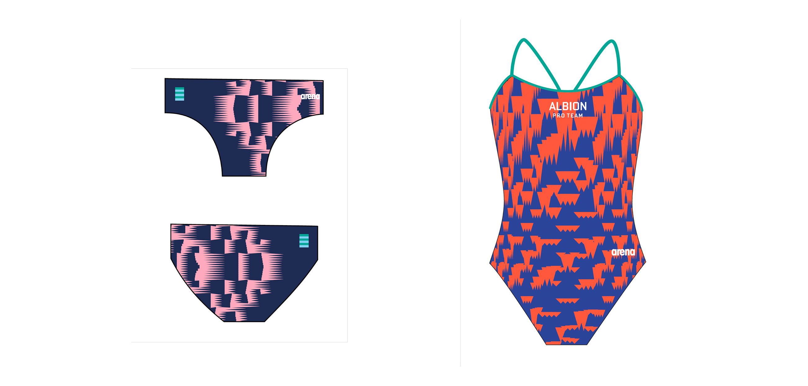
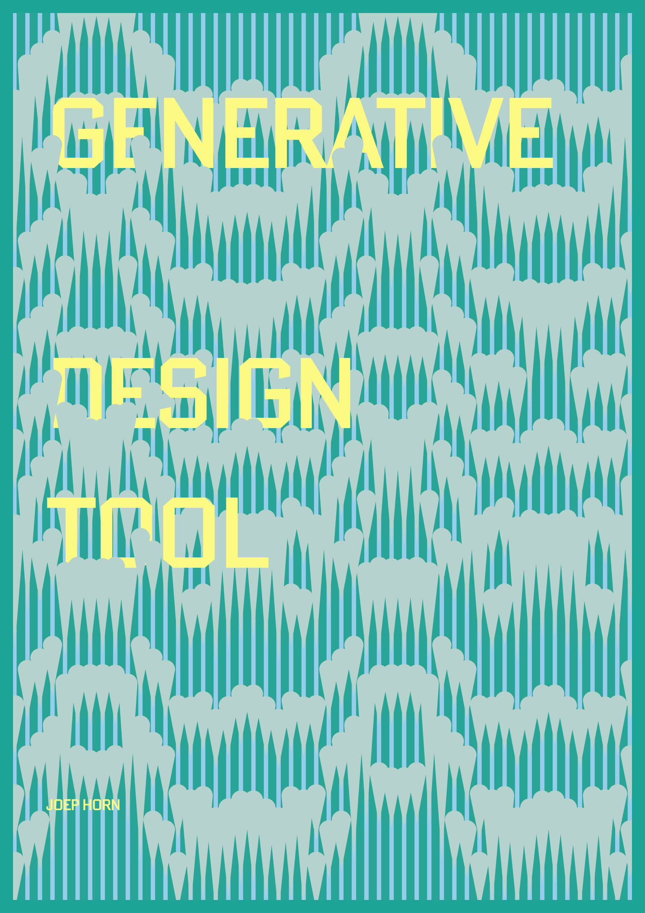
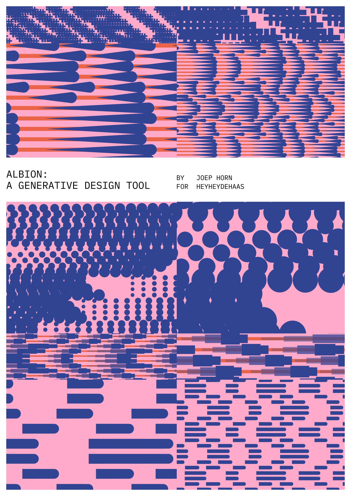
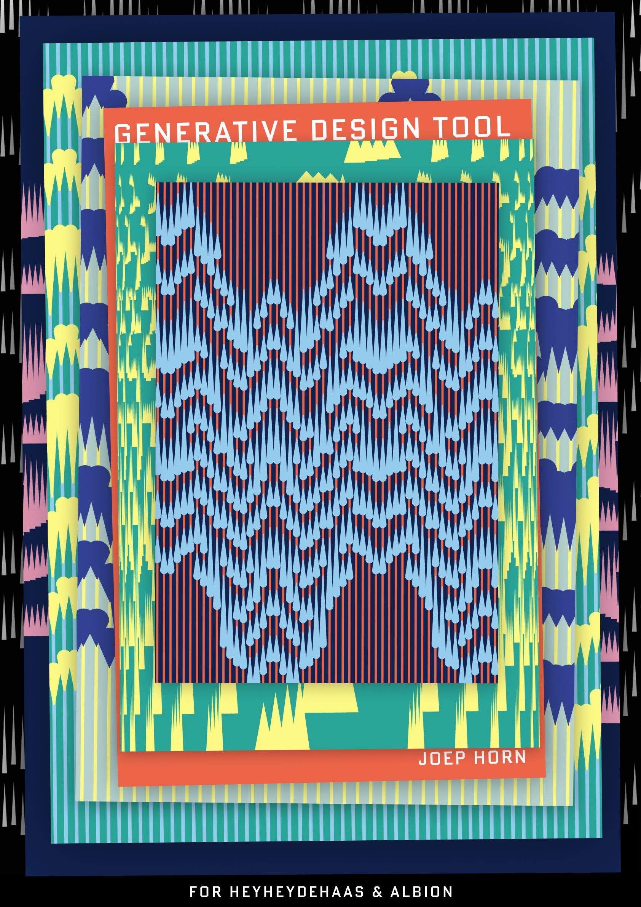

albion-tool
↳ achtergrond
voor mijn afstudeerproject bij heyheydehaas maakte ik voor albion, een zwemteam, een dynamische en interactieve tool die beelden genereert op basis van hun logo en visuele stijl door parameters aan te passen.
↳ mijn rol
ik ontwierp en ontwikkelde de tool, grafische uitingen, stickers, merchandise-ontwerpen en animaties.
↳ resultaat
dynamische visuele uitingen en merchandise-ontwerpen die hun merk versterken.
een webtool die heyheydehaas kan gebruiken om dynamische en sportieve visuals en animaties voor albion te maken.
demoeen animatie maken met de tool in 1 minuut
animatie die op een led-scherm werd getoond tijdens de ek-kwalificaties

stickers

zwemkleding in productie voor hun profteam



posters voor afstudeerpresentatie